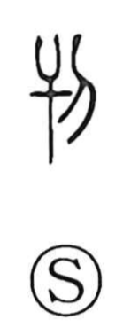

刊

Uncategorized
Kun: | On: kan
to publish ・ publication ・ to engrave ・ to cut out ・ to delete
Explanation
刊 is a phono-semantic character: 干 functions as the phonetic, signaling the on reading kan, while the sense is to cut away, erase, or remove. The graph evokes shaving or cutting wood and, by extension, the world of woodblock printing. 刊行 originally meant carving the blocks for a book and printing it, and the character appears widely in that context, as in 刊刻 and 刊布. Because a single portion of a woodblock could be cut out and replaced to correct a character, terms such as 刊誤, 刊改, and 刊謬 arose for the emendation of misprints.